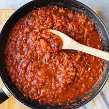

Red Sauce

Lets make some homemade tomato sauce to dip your garlic bread into or serve over your favorite pasta.
Ingredients
- 2 cans hole peeled tomato's
- 1 small can tomato paste
- 6 cloves garlic (finely chopped)
- 1 medium yellow onion (chopped)
- oregano
- basil
- tyme
- 1/4 cup olive oil
- teaspoon sugar
- salt and pepper
- a hot pepper of your choosing (chopped)(optional)
Instructions
- chop up the tomato's from the can
- chop up the oregano, basil and tyme
- pre-heat a sauce pan and add olive oil to it
- saute the onions and garlic until translucent
- add chopped tomato's, paste and herbs
- add sugar
- add salt and pepper to taste
- cook on high heat until sauce starts to boil
- turn down heat to low and let simmer for 3 hours (stirring several time an hour)